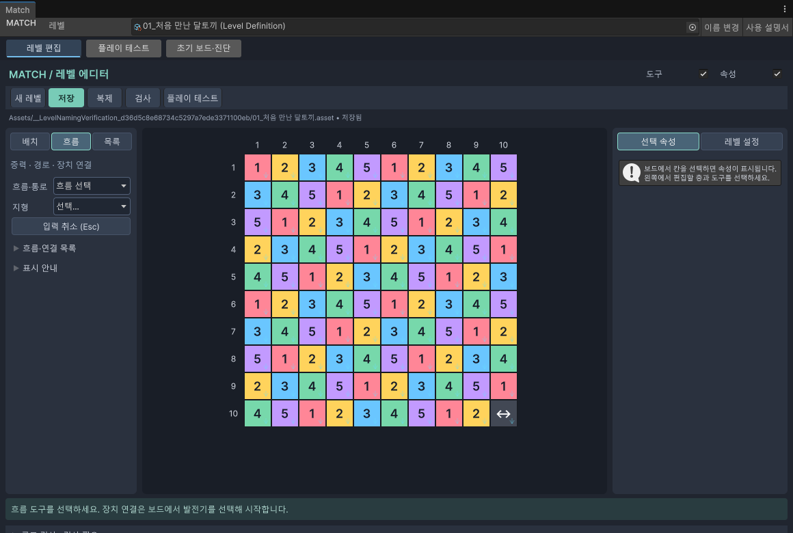

04 · 이동 길 만들기
흐름과 연결
블록이 떨어질 방향과 장치가 이어질 곳을 정합니다.
시작 전에 보드에 사용할 칸과 필요한 장치를 먼저 놓습니다.
떨어지는 방향 정하기
- 왼쪽 흐름 탭을 누릅니다.
- 흐름·통로 → 중력 ↓ / ↑ / ← / →에서 방향을 고릅니다.
- 보드의 칸을 칠합니다. 넓은 범위는 사각 구역 칠하기를 켭니다.
중력은 블록이 떨어지는 방향입니다. 별도로 정하지 않은 칸은 아래로 떨어집니다. 지정한 방향을 없애려면 중력 초기화를 사용합니다.

정해진 길로 보내기
- 흐름·통로 → 직접 경로를 고릅니다.
- 시작 칸에서 이웃 칸으로 누른 채 움직입니다.
- 초록색으로 표시된 연결 가능한 칸을 따라갑니다.
- 끝칸에서 마우스를 놓아 확정합니다. 클릭으로 점을 잇는 방식도 가능하며, 경로 완료 (Enter)로 끝냅니다.
Esc는 아직 끝내지 않은 입력을 취소합니다. 만들어 둔 경로를 지울 때는 경로 칸 삭제를 사용합니다. 경로는 멀리 떨어진 칸을 한 번에 잇는 기능이 아닙니다.
입구와 출구 연결하기
- 흐름·통로 → 통로 입구를 골라 입구를 놓습니다.
- 입구를 선택하면 연결점을 볼 수 있습니다.
- 연결점에서 출구로 쓸 수 있는 칸까지 끌어갑니다. 연결 가능한 칸이 강조됩니다.
- 대상에 놓은 뒤 연결선과 입구·출구를 확인합니다.
연결된 통로의 출구 쪽에서도 연결점으로 조작할 수 있습니다. 오른쪽 설정의 출구 지정도 사용할 수 있습니다. 미연결 상태는 작업 중 저장할 수 있지만 검사로 남은 연결을 확인하세요.
발전기와 장애물 연결하기
- 발전기와 연결할 장애물을 먼저 놓습니다.
- 선택 또는 흐름 선택 도구로 발전기를 누릅니다.
- 발전기의 연결점 세 개 중 빈 점에서 끌기 시작합니다.
- 강조된 장애물의 연결점에 놓습니다. 연결선이 생기고 점에 불이 들어오면 연결된 것입니다.
장애물의 연결점에서 발전기로 끌어도 됩니다. 벽 때문에 길이 없거나 이미 연결된 대상은 후보에서 빠질 수 있습니다. 전선은 칸의 안쪽이 아니라 칸 사이의 틈을 따라 표시됩니다.
선을 지우려면 선이나 연결점에서 오른쪽 버튼을 누르고 연결 해제를 고릅니다. 오른쪽 버튼을 누르는 것만으로 바로 지우지는 않습니다.
여러 길이 만나는 칸의 순서
합류는 여러 길이 한 칸으로 모이는 것입니다. 어느 길의 블록을 먼저 받을지 정할 수 있습니다.
- 길이 모이는 칸을 선택 또는 흐름 선택으로 고릅니다.
- 오른쪽 합류 순서 목록을 확인합니다.
- 목록을 끌거나 ↑ / ↓ 버튼으로 순서를 바꿉니다.
- 기본 순서로 돌릴 때는 오른쪽 버튼 메뉴의 초기화 항목을 고릅니다.
초기화는 연결된 길 자체를 지우는 동작과 다릅니다. 메뉴 이름을 확인하고 실행하세요.
벽과 도착 바닥
| 도구 | 용도 |
|---|---|
| 지형 → 고철 벽 | 두 칸 사이의 이동을 막을 경계를 칠합니다. |
| 고철 벽 삭제 | 칠한 경계를 지웁니다. |
| 흐름·통로 → 도착 바닥 | 회수 부품이 도착할 곳을 정합니다. |
| 도착 바닥 삭제 | 도착 지정을 지웁니다. |
변경 이력
| 변경일 | 변경 항목 | 이전 → 현재 | 이유 |
|---|---|---|---|
| 2026.09.28 | 모양 목록 | 추천 → 등록형 목록 안내 추가 | 사용자 등록 방식 반영 |
| 2026.09.28 | 맵 모양 추천 안내 | 추가 · 왼쪽 목차에 추천 안내 연결 | 추천과 ! 도움말 사용법 안내 |
| 2026.09.28 | 이 페이지 전체 | 추가 · 처음 작성 | 현재 Match 도구를 쉽게 설명 |
설명 편집일: 2026.09.28 · 대상: Windows / Unity 6000.3.10f1
검증 상태: 메뉴·절차 코드 대조, 실제 화면 캡처. 확인 범위 보기